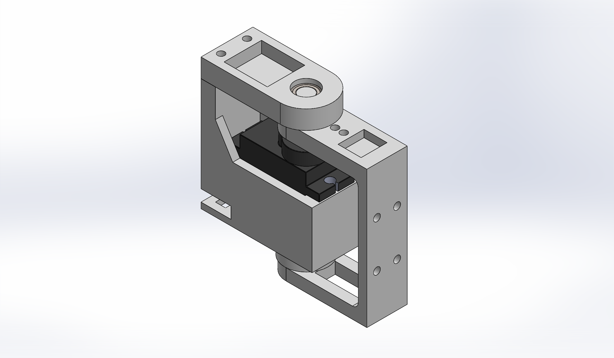

Робот-боксёр на MG90S — к чему стремимся
Концепт механики по ТЗ (ROBO-ONE Light): приземистое шасси, широкая стойка, 15 сервоприводов, каждый в узле разгрузки (подшипник 685ZZ + ось-ленивец 623ZZ). Схема не в масштабе 1:1, внешний вид пока не прорабатывали: сначала механика
Вид спереди — боевая стойка
Вид сбоку — низкий центр тяжести
Колени согнуты: ЦТ ниже, сервоприводам ног проще держать позу. Удар идёт от разворота таза (W) и выброса плеча (S2), а не только от локтя.
Степени свободы (по ТЗ) — 15 × MG90S
| Узел | Сервы | Назначение |
|---|---|---|
| Таз W | 1 | скручивание корпуса: хуки и апперкоты |
| Плечо S1 / S2 | 2 × 2 | подъём руки / выброс вперёд (джеб) |
| Локоть E | 1 × 2 | стойка, блок |
| Бедро H1 / H2 | 2 × 2 | качание в сторону / шаг |
| Колено K, голеностоп A | 2 × 2 | присед, баланс вперёд-назад |
| Итого | 15 | из 32 каналов RTrobot свободно 17 |
В ТЗ на ноги 6–8 DoF; здесь 8. Если понадобится поперечный баланс на стопе, добавим голеностоп-крен (+2 сервы).
Что уже есть: узел сустава v0.2 построен в SolidWorks

Удар по рычагу уходит через цапфу Ø5 в 685ZZ и мост, а снизу через штифт 3×8 в 623ZZ, то есть в корпус. Вал сервы получает только момент через качалку. Гнездо 23,2 × 13,0 мм взято из вашей «Голени». Ход ±140°.
Оценка массы (первая прикидка)
| Позиция | Расчёт | Масса |
|---|---|---|
| Сервоприводы MG90S | 15 × 13,4 г | ≈ 200 г |
| Узлы суставов (печать + подшипники) | 15 × ~14 г (v0.2: 16,9 см³, печать 30 %) | ≈ 210 г |
| Торс, таз, звенья, кулаки TPU | оценка | ≈ 120 г |
| АКБ 2S, BEC, контроллер, IMU, провода | оценка | ≈ 120 г |
| Стальные грузы в стопах | 2 × ~40 г | ≈ 80 г |
| Итого | ≈ 0,73 кг |
Узел v0.2 уже с рёбрами и выборками (−10 % объёма); основная экономия массы даёт печать с заполнением. Следующий шаг механики: звенья ног на базе узла и сверка с регламентом ROBO-ONE Light.